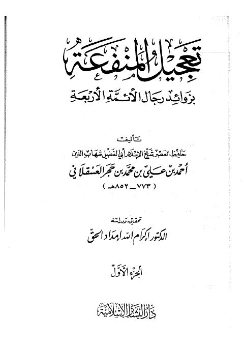

Authors
إكرام الله إمداد الحق
Author
Resources
تعجيل المنفعة بزوائد رجال الأئمة الأربعة
تعجيل المنفعة بزوائد رجال الأئمة الأربعة
أحمد بن علي بن حجر العسقلاني

تعجيل المنفعة بزوائد الأئمة الأربعة- ط. البشائر
تعجيل المنفعة بزوائد الأئمة الأربعة- ط. البشائر
أحمد بن علي بن حجر العسقلاني